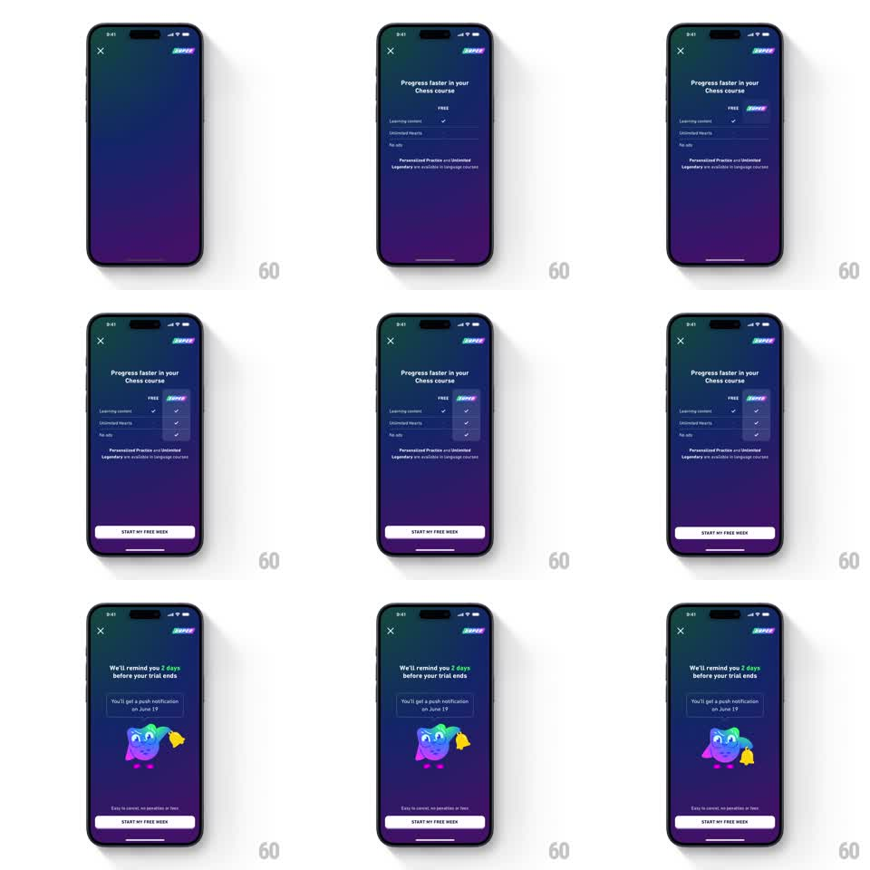

Media
Frame-by-frame

Rebuild this animation 1:1: Duolingo's Super trial flow - a dark purple paywall where a FREE vs SUPER comparison table builds row by row with checkmark ticks, a "START MY FREE WEEK" pill springs in, then the screen transitions to a trial-reminder page where the caped owl mascot rings a notification bell.

Rebuild this animation 1:1: Duolingo's Super trial flow - a dark purple paywall where a FREE vs SUPER comparison table builds row by row with checkmark ticks, a "START MY FREE WEEK" pill springs in, then the screen transitions to a trial-reminder page where the caped owl mascot rings a notification bell. ## Integration Integration: stack-agnostic spec - springs given as stiffness/damping, timed motions as duration + curve; map every value to your framework and animation library of choice. ## Scene Dark purple gradient screens, close X top-left, SUPER wordmark top-right. Screen 1: headline "Progress faster in your Chess course", a two-column comparison table (FREE / SUPER headers, rows for Learning content, Unlimited Hearts, No ads) with a footnote, and a light pill CTA "START MY FREE WEEK". Screen 2: "We'll remind you 2 days before your trial ends" with a sub-card "You'll get a push notification on June 19", the owl mascot in a purple cape holding a yellow bell, reassurance copy, and the same CTA. ## Motion spec Pattern: staged comparison-table build with mascot beat. - Screen 1 entrance: headline fades up (250ms), then the SUPER column header pops (scale 0.8 -> 1.0, spring ~350/20). - Table rows stagger in top to bottom (120ms apart, 250ms ease-out each); SUPER-column checkmarks tick in with a small pop (scale 0 -> 1.2 -> 1.0, 180ms), FREE checkmarks fade in flat. - CTA pill slides up and springs into place (translateY 30pt -> 0, spring ~300/18, one soft bounce). - Transition: horizontal push (300ms ease-in-out) to the reminder screen. - Reminder beat: mascot drops in from above with a spring (~280/16, slight squash on land), then rings the bell - bell rotates -15deg -> 15deg -> 0 three times (120ms per swing) with two sound arcs pulsing beside it. - The date card fades up (200ms) after the first ring. ## Calibration - The SUPER column must visibly win the build - it gets the pops and the color while FREE stays quiet. - The bell ring is the only looping motion; everything else plays once. ## Reduced motion Table rows and CTA fade in without travel or bounce; the mascot appears static with the bell mid-ring. ## Don't miss - The CTA persists across both screens with identical styling and position. - The reminder screen keeps the dark purple theme - no jump to a light screen mid-flow.